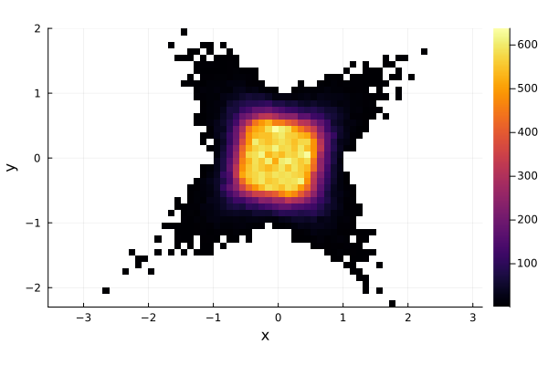
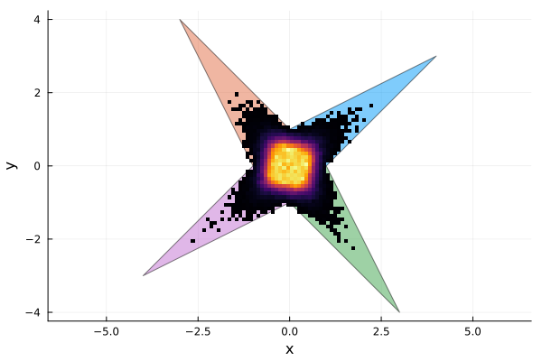

Solution set of interval linear system
Interval linear systems
An interval linear system is defined as
\[\mathbf{A}\mathbf{x}=\mathbf{b}\]
where $\mathbf{A}\in\mathbb{I}\mathbb{R}^{n\times n}$ and $\mathbf{b}\in\mathbb{I}\mathbb{R}^n$ are an interval matrix and vector, respectively.
The solution set $\mathbf{x}$ is defined as
\[\mathbf{x} = \{x \in \mathbb{R}^n | Ax=b \text{ for some } A\in\mathbf{A}, b\in\mathbf{b} \}.\]
In other words, $\mathbf{x}$ is the set of solutions of the real linear systems $Ax=b$ for some $A\in\mathbf{A}$ and $b\in\mathbf{b}$. If the interval matrix $\mathbf{A}$ is regular, that is all $A\in\mathbf{A}$ are invertible, then the solution set $\mathbf{x}$ will be non-empty and bounded. In general, checking for regularity of an interval matrix has exponential complexity.
Solution by Monte-Carlo
A naive approach to solve an interval linear system would be to use Montecarlo, i.e. to randomly sample elements from the intervals and solve the several random real systems. Suppose we want to solve the linear system
\[\begin{bmatrix} [2, 4]&[-2,1]\\ [-1, 2]&[2, 4] \end{bmatrix}\mathbf{x} = \begin{bmatrix} [-2, 2]\\ [-2, 2] \end{bmatrix}\]
Since we are planning to solve several thousands of instances of the interval problem and we are working with small arrays, we can use StaticArrays.jl to speed up the computations.
using IntervalLinearAlgebra, StaticArrays
A = @SMatrix [2..4 -2..1; -1..2 2..4]
b = @SVector [-2..2, -2..2]To perform Montecarlo, we need to sample from the intervals. This can be achieved using the rand function, for example
rand(1..2)1.6000099852450038we are now ready for our montecarlo simulation, let us solve $100000$ random instances
N = 100000
xs = [rand.(A)\rand.(b) for _ in 1:N]now we plot a 2D-histogram to inspect the distribution of the solutions.
using Plots
x = [xs[i][1] for i in 1:N]
y = [xs[i][2] for i in 1:N]
histogram2d(x, y, ratio=1)
xlabel!("x")
ylabel!("y")"/home/runner/work/IntervalLinearAlgebra.jl/IntervalLinearAlgebra.jl/docs/build/explanations/histogram-2d.png"
As we can see, most of the solutions seem to be condensed close to the origin, but repeating the experiments enough times we also got some solutions farther away, obtaining a star looking area. Now the question is, have we captured the whole solution set?
Oettli-Präger theorem
The solution set $\mathbf{x}$ is exactly characterized by the Oettli-Präger theorem [OET64], which says that an interval linear system $\mathbf{A}\mathbf{x}=\mathbf{b}$ is equivalent to the set of real inequalities
\[|A_cx-b_c| \le A_\Delta|x| + b_\Delta,\]
where $A_c$ and A_\Delta are the midpoint and radius matrix of \mathbf{A}, $b_c$ and $b_\Delta$ are defined similarly. The absolute values are taken elementwise.
We have now transformed the set of interval equalities into a set of real inequalities. We can easily get rid of the absolute value on the left obtaining the system
\[\begin{cases} A_cx-b_c \le A_\Delta|x| + b_\Delta\\ -(A_cx-b_c) \le A_\Delta|x| + b_\Delta \end{cases}\]
We can remove the absolute value on the right by considering each orthant separately, obtaining $2^n$ linear inequalities, where $n$ is the dimension of the problem.
Practically this means rewriting $|x|=D_ex$, where $e\in\{\pm 1\}^n$ and $D_e$ is the diagonal matrix with e on the main diagonal. As there are $2^n$ possible instances of $e$, we will go through $2^n$ linear inequalities in the form
\[\begin{bmatrix} A_c-A_\Delta D_e\\ -A_c-A_\Delta D_e \end{bmatrix}x\le \begin{bmatrix}b_\Delta+b_c\\b_\Delta-b_c\end{bmatrix}\]
as this inequality is in the form $\tilde{A}x\le \tilde{b}$ its solution set will be a convex polytope. This has also an important theoretical consequence: the solution set of any interval linear system is composed by the union of $2^n$ convex polytopes (some possibly empty), each lying entirely in one orthant.
In IntervalLinearAlgebra.jl the polytopes composing the solution set can be found using the LinearOettliPrager() solver. Note that to use it you need to import LazySets.jl first.
using LazySets
polytopes = solve(A, b, LinearOettliPrager())
plot(polytopes, ratio=1, legend=:none)
histogram2d!(x, y)
xlabel!("x")
ylabel!("y")"/home/runner/work/IntervalLinearAlgebra.jl/IntervalLinearAlgebra.jl/docs/build/explanations/oettli.png"
As we can see, the original montecarlo approximation, despite the high number of iterations, could not cover the whole solution set.
Note also that the solution set is non-convex but is composed by $4$ convex polygons, one in each orthant. This is a general property of interval linear systems. For example, let us consider the interval linear system
\[\begin{bmatrix} [4.5, 4.5]&[0, 2]&[0, 2]\\ [0, 2]&[4.5, 4.5]&[0, 2]\\ [0, 2]&[0, 2]& [4.5, 4.5] \end{bmatrix}\mathbf{x}=\begin{bmatrix}[-1, 1]\\ [-1, 1]\\ [-1, 1]\end{bmatrix}\]
its solution set is depicted in the next picture.
Disadvantages of Oettli-Präger
As the number of orthants grows exponential with the dimension $n$, applying Oettli-Präger has exponential complexity and is thus practically unfeasible in higher dimensions. Moreover, also computing the interval hull of the solution set is NP-hard [ROH95]. For this reason, in practical applications polynomial time algorithms that return an interval enclosure of the solution set are used, although these may return an interval box strictly larger than the interval hull.